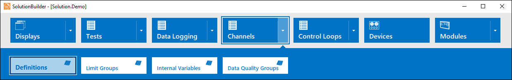
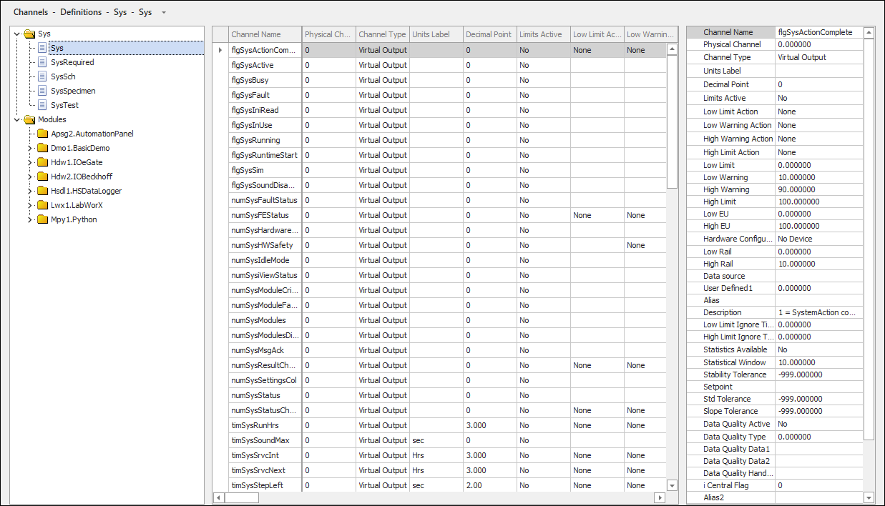
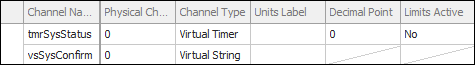
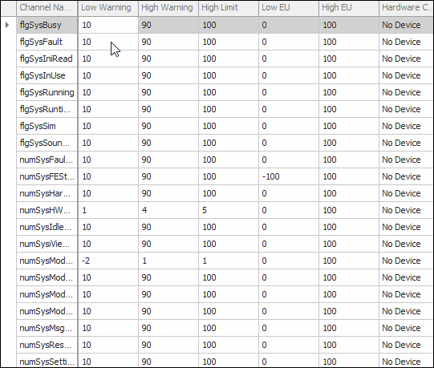
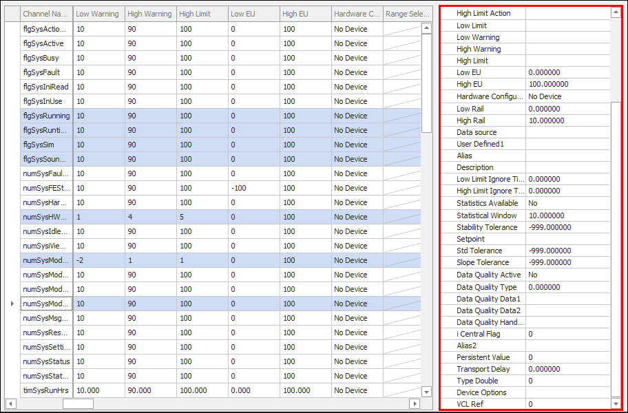

iTest User's Guide
Channels are stored in channel definition files. These files are flat, tab delimited ASCII files that use the .fil extension and are displayed in a spreadsheet editor. Each row represents a channel, and each column represents a unique attribute or RDB field for that channel. Column field entries can support numeric values, text, channel names, and simple expressions. Support of these entries is dependent on the column (e.g., the Physical Channel column only supports numeric values). For more information about iTest channels, refer to the iTest Channels documentation. For more information about RDB fields, refer to the RDB Field Definitions reference list.
Channels can be managed in SolutionBuilder or Test Manager and are stored in the $SUPPORTDIR\DB folder. This document details how to manage channels in SolutionBuilder. To access the Channel Definitions editor in SolutionBuilder, select Channels > Definitions from the main menu.
Definitions Menu Option

The Channel Definitions editor contains three sections: the list of definition files, the spreadsheet editor, and the property sheet editor.
Channel Definitions Editor

The following right-click options are available:
Right-Click Options
| Option | Description |
| List of Definition Files | |
|---|---|
| Add | Adds a new channel definition file to the end of the list. |
| Remove | Removes the selected channel definition file. |
| Channel Assignment | Opens the Channel Assignment dialog, allowing you to assign module channels to system I/O channels where appropriate. For more information, refer to the Channel Assignment documentation. |
| Rename | Enables renaming of the channel definition file. Type the new name then click elsewhere in the editor to save changes. |
| Cut | Removes the selected channel definition file and copies it to the clipboard. |
| Paste | Pastes the copied channel definition file. If the channel definition file already exists in the solution, then an error message will display, stating that the channel definition file cannot be pasted. |
| Undo | Undoes the previous action. |
| Redo | Redoes the last undone action. |
| Active | Activates/deactivates the channel definition file. When deactivated, the channels contained in the channel definition file will not be loaded into the RDB at start-up. Inactive channel definition files will be in gray font in the list of channel definition files. |
| Spreadsheet Editor | |
| Insert Before | Displays the New Channel dialog, prompting you to create a new channel. After you have configured the channel, the new channel is inserted before the selected channel. |
| Add to End | Displays the New Channel dialog, prompting you to create a new channel. After you have configured the channel, the new channel is added to the end of the channel list. |
| Edit | Enables you to edit the selected channel using the Edit Channel dialog. |
| Delete | Deletes the selected channel row from the editor. |
| Duplicate... | Duplicates the selected channel. This displays the New Channel dialog with the configurations kept from the duplicated channel. |
| Duplicate Many... | Displays the Duplicate Channel Many dialog. You can use this option to create multiple duplicates of the selected channel by indicating a starting index and the number of copies to make. A maximum of 1,000 duplicate channels can be created at a time. This feature is only available for virtual channels (i.e., virtual output, virtual input, virtual string, virtual output array, virtual string array, and virtual timer). |
| Copy Channel(s) | Copies the selected channel(s). |
| Insert Copied Channel(s) | Inserts a new version of the copied channel(s) and provides it with a unique name. |
| Clear Sorting | Restores the column sorting to its original sorting order. |
| Restore Column Widths | Restores the column widths to their original size. |
| Undo | Undoes the last action. |
| Redo | Redoes the last undone action. |
| Property Sheet Editor | |
| Best Fit | Resizes the column widths to best fit the cell values. |
The spreadsheet editor contains a list of all available channels within the definition file. All RDB fields are displayed in the editor; with each RDB field being represented by a column. Since each channel type (e.g., virtual output, virtual string, etc...) uses a unique set of RDB fields, any columns not applicable to the channel type will have a slash in the cell, indicating that the value cannot be edited, as shown in the image below:
Example: Inapplicable Column Type

 |
NOTE: | The channel type can only be changed from the Edit Channel dialog. |
Columns can be sorted by clicking on the header. The Clear Sorting right-click option can be used to restore the column sorting to its original order.
Sorting Columns

Multiple channels can be selected for editing using the property sheet editor. To select multiple channels, use Ctrl + Left-click or Shift + Left-click.
Selecting Multiple Channels
The property sheet editor provides an overview of a selected channel's properties (i.e., RDB fields), where you can quickly edit the channel's properties and attributes. If multiple channels are selected for editing, then the property sheet editor will only display properties shared between the selected channels.
|
NOTE: | The channel type can only be changed from the Edit Channel dialog. |
Property Sheet Editor - Multiple Channels

When you create a new channel definition file, you must also add channels, define channel properties, and assign unique attributes to the channel.
|
NOTE: | Each channel type has unique column headers. If you have a file with multiple channel types, inapplicable columns will have a slash in their cells, indicating that the cell value cannot be edited. |
To create a new definition file, do the following: